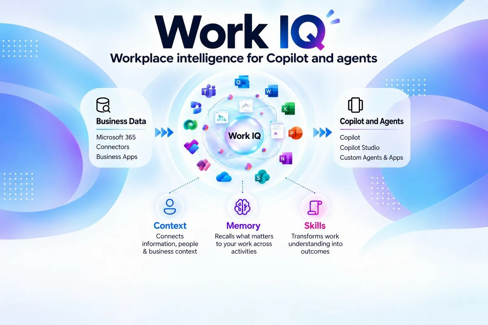
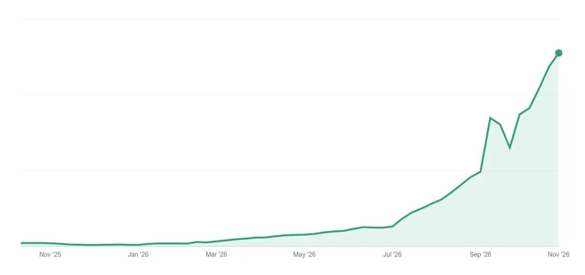

Work IQ agents get enterprise data and user memory
Also: VS Code mixes Copilot, Claude and Codex in one session, Claude gets security hooks before every tool call, Perplexity puts agents in Slack channels, and Notion wants to hold every agent’s context.
What matters today

WORK IQ FOR AGENTS
Microsoft is bringing Copilot connectors to the Work IQ APIs and giving agents read access to a user’s Copilot memory.
- Connectors: generally available, rolling out late November through December. Whatever a user already connected in Copilot Chat works automatically, under existing permissions.
- Memory: a new Work IQ MCP path returns Custom Instructions, Saved Memories and chat-history memories. Read only, on by default for admins, rolling out in December.
- Why it mattersConnectors and memory are the two things every agent team rebuilds. Work IQ now offers both behind one API, MCP included. The build-or-rent line for agent context just moved.
MIXED HARNESSES
VS Code 1.145 lets one session mix agent harnesses: Claude can review a plan Copilot wrote, or Codex can run the same task alongside.
- Released November 4, with the feature in preview. Each chat keeps its own model, agent and permission level.
- The Copilot harness, built on the Copilot SDK, stays the default. Also new: cron schedules for agent automations, and MCP apps can register tools the model calls.
- Why it mattersMicrosoft’s open-source editor now treats Copilot, Claude and Codex as swappable workers. The durable product is the session, its permissions and its review flow, not any one agent.
CLAUDE ADMIN CONTROLS
Claude Enterprise can now send every prompt and tool call through a company’s own security tools before it runs.
- Generally available: prompt hooks and pre-tool-call hooks that apply a company’s existing DLP policies.
- In beta: a security center that compares settings with Anthropic’s baseline, one admin console across organizations, forced sign-out by API, and EDR inside the Cowork sandbox.
- Why it mattersA customer-owned check before every tool call is becoming the baseline for selling agents to enterprises. An agent with no hook point for the buyer’s DLP will stall in security review.
TEAMMATES IN SLACK
Perplexity launched teammates: always-on agents you add to a Slack channel, where colleagues hand them work and ask for updates.
- A teammate watches connected tools such as Slack, GitHub and Linear, starts work when something arrives, and runs in its own sandbox with its own memory.
- Launched November 4 as a research preview for individual Max subscribers, $200 a month. Enterprise plans are excluded.
- Why it mattersThe form factor is converging: a persistent agent with its own sandbox and memory that takes work where the team already talks. Shipping it without admin controls keeps it out of the enterprise for now.

NOTION AS CONTEXT
Notion is repositioning as the shared context layer for every agent, including agents built by other companies.
- Notion’s numbers: agents create about half of all pages, AI usage is up 9x and MCP volume is up about 60x this year.
- The product, launched November 4: a Memories database and shared skills that ChatGPT, Claude and other assistants read and write over MCP.
- Why it mattersThe fight is over who holds agent context. Notion offers a neutral store any assistant can write to over MCP, against vendor-owned layers such as Work IQ. Memory portability is becoming a buying criterion.
Also in AI today
- Microsoft 365 Copilot: Opal, a computer use agent, starts rolling out November 9, billed by usage in Copilot Credits; Copilot Studio agents get success-rate metrics and alerts by December 4.
- Microsoft open source: DACS, a Kubernetes cache that keeps model weights and datasets on GPU-node disks, is now on GitHub. In one training test, loads stalling five seconds or more fell from 14% to 0.1%.
- Microsoft Foundry: the Azure Developer CLI extension for deploying hosted agents hit 1.0; Foundry Local runs Qwen3.8-27B on a 24 GB GPU behind GitHub Copilot.
- Microsoft Security: Execution Containers, OS-level containment for local agents on Windows, are generally available; Defender now discovers over 50 local agents and their MCP servers.
- GitHub: its new Git storage took 7,200 pushes a second from 5,000 agents on one repository in tests. Private preview; wider rollout early next year.
- GPT-6 Cyber: OpenAI’s exploit-finding model, rated Critical for cyber risk, ships to approved customers; Microsoft caught an attacker’s agent go from a leaked GitHub secret to Azure Key Vault data in five minutes.
- Google: Agent Substrate, its agent runtime, hit 1.0 on GKE and goes to the CNCF; Gemini Omni 1.2 Flash video is generally available at $0.07 a second, 30% cheaper.
- AWS: Web Answer, a cited-answer tool called over MCP, is generally available on AgentCore; WAF pays publishers through Stripe when agents buy content; Q Developer in the console is now the AWS assistant.
- App builders: Cursor’s cloud agents now build, host and deploy internal web apps with a database and sign-in; Salesforce Quick Pages, in beta, turns a described page into a governed app on live data.
- Managed agent platforms: Mistral Studio adds managed agents with sandboxes, subagents and hooks, deployable on premises; Moonshot AI launched Kimi Hosted Agents with a security hook before each inference.
- Cloudflare: formed the Trusted Agent Delegation coalition to standardize, through the IETF, how a site identifies the user behind a hosted agent.
- Consumer assistants: Claude Personal Finance, a beta on US paid plans, reads bank accounts through Plaid, read-only; Meta’s Muse app is rolling out real-time voice and avatars in the US.
- Open weights: Baidu released ERNIE 5.5 Flash Base, a 280-billion-parameter base model; Nvidia added four Cosmos 3 checkpoints for driving and robot simulation.
- Data center backlash: OpenAI pledged no NDAs with public officials on its data center projects; the Nasdaq fell 5.5% on fears of regulation after the midterms.